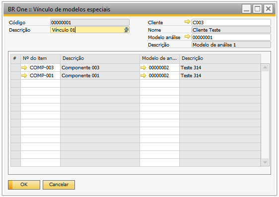

Vínculo de modelos especiais
Para acessar Vínculo de modelos especiais é necessário ir no menu:
Administração -> Qualidade -> Vínculo de modelos especiais
Na tela “BR One :: Vínculo de modelos especiais” são cadastrados os vínculos entre modelos de análise e clientes e/ou itens. Este vínculo possui efeito apenas em relatórios.
Caso não seja informada uma Descrição para o vínculo, será exibida a seguinte mensagem de erro:
BR One :: Preencher descrição no cabeçalho.
Caso não seja informado um valor para o campo Cliente, será exibida a seguinte mensagem de erro:
BR One :: Preencher cliente.
Caso não seja informado um valor para o campo Modelo de análise, será exibida a seguinte mensagem de erro:
BR One :: Preencher modelo de análise no cabeçalho.
Caso não seja informado nenhum Item, será exibida a seguinte mensagem de erro:
BR One :: Preencher item.
Caso não seja informado nenhum Modelo de análise para o item, será exibida a seguinte mensagem de erro:
BR One :: Preencher modelo de análise na linha.
Não poderá haver mais de um cadastro de vínculos para o mesmo Cliente. Caso em um novo vínculo de modelos especiais seja informado um cliente que já foi cadastrado, será exibida a seguinte mensagem de erro:
BR One :: Já existe um vínculo com o cliente “X”
Não poderá haver mais de uma linha com o mesmo Item. Caso seja informado um mesmo Item, será exibida a seguinte mensagem de erro:
BR One :: Não pode haver o mesmo item em mais de uma linha.
Não poderá haver linha com o mesmo Modelo de análise do cabeçalho. Caso isso aconteça, será exibida a seguinte mensagem de erro:
BR One :: O modelo da linha não pode ser igual ao do cabeçalho.